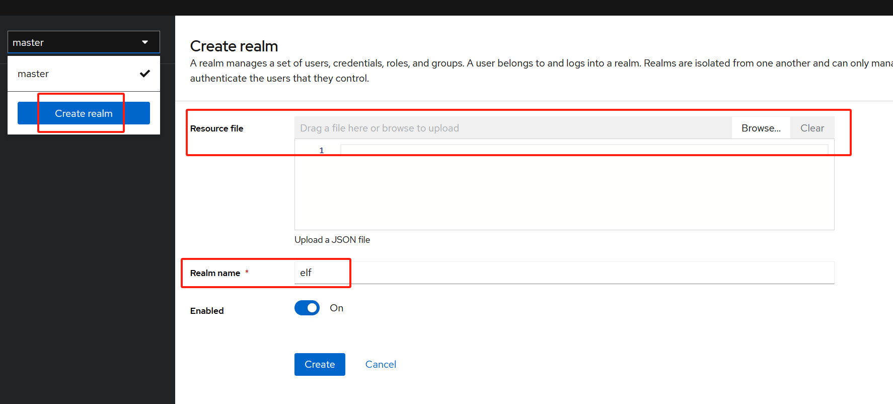
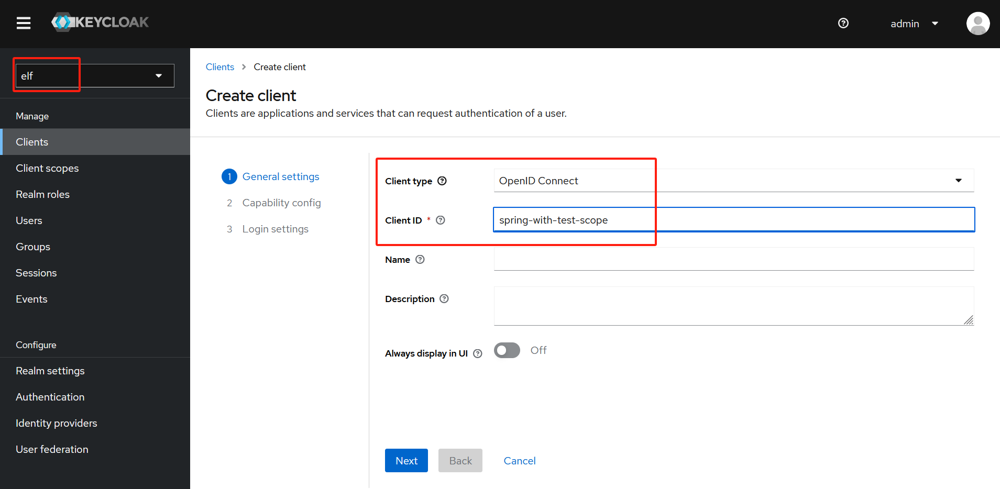
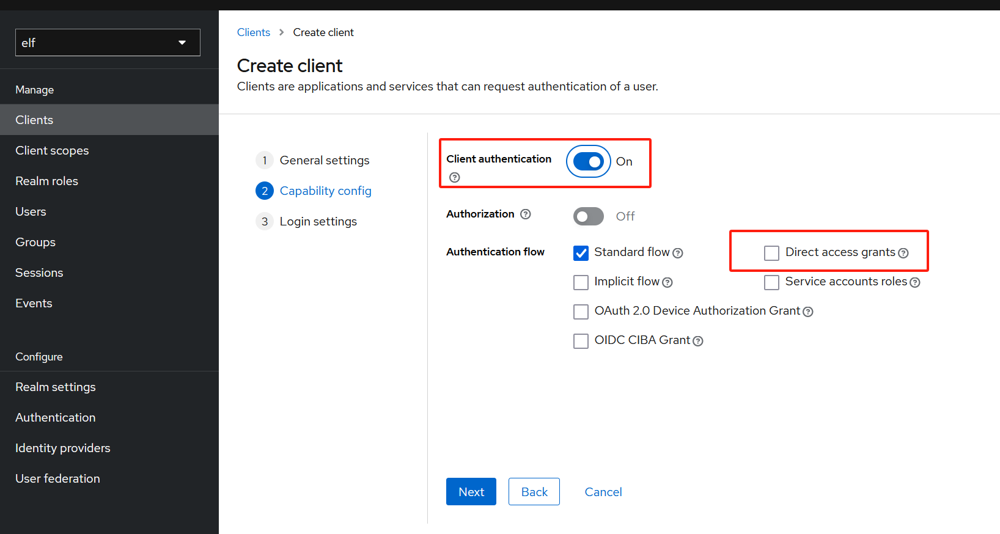
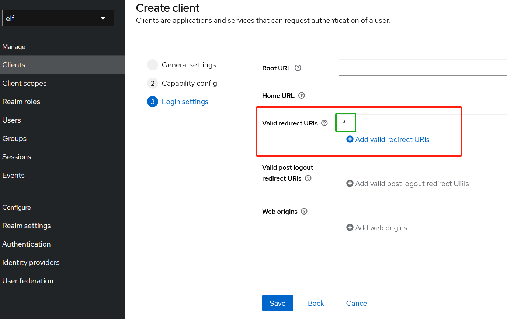
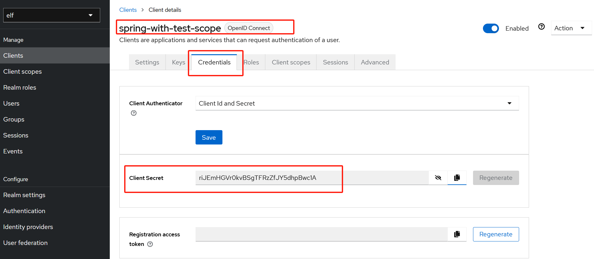
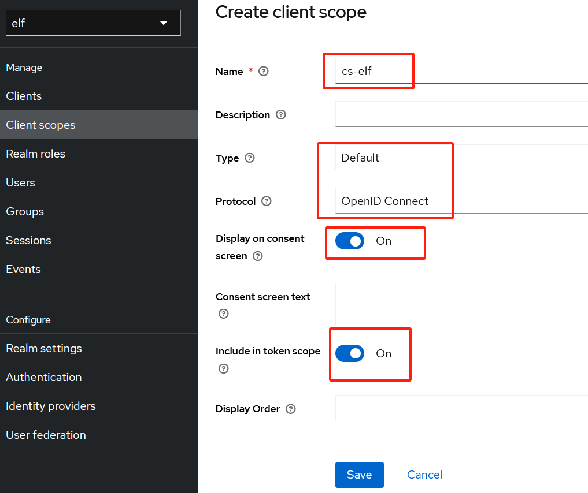
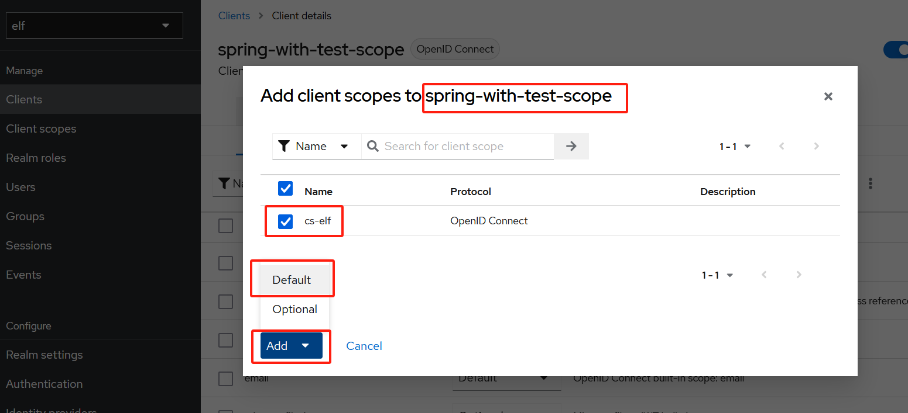
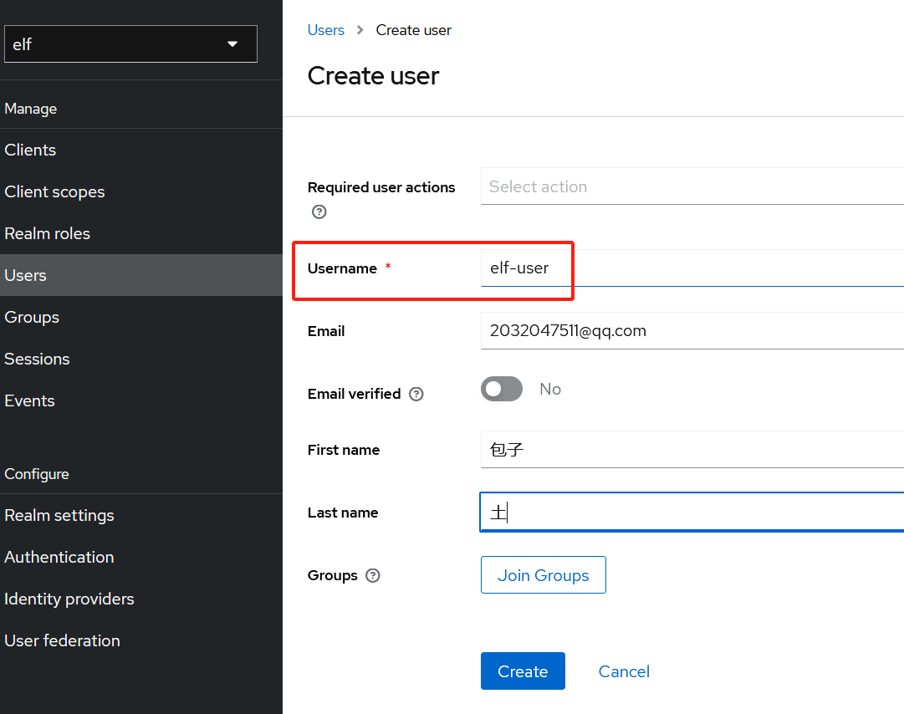
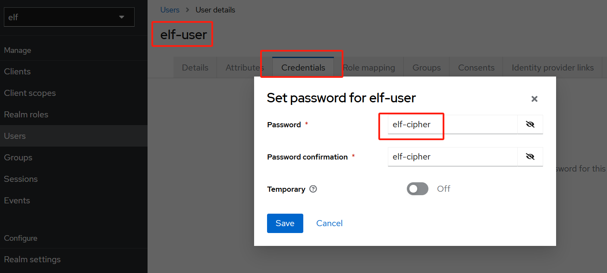
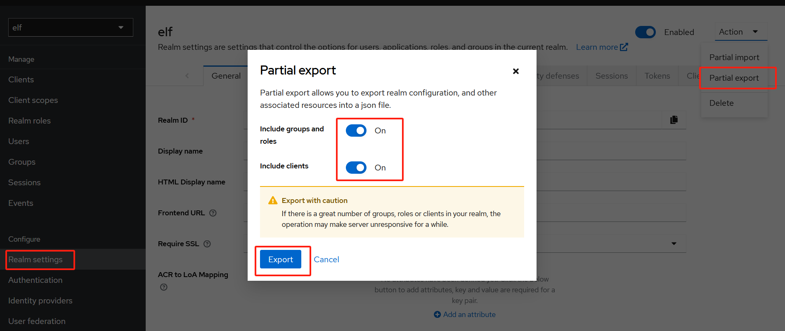

1. Preface
-
docker pull keycloak/keycloak:23.0.7
-
Microservice Cloud Gateway OAuth2 Keycloak
-
Keycloak Authorization Server
-
Spring Cloud Gateway Api Gateway：
OAuth2 Client and OAuth2 Resource Server -
Two Boot Business Microservice
-
对任何请求，将在转发到下游服务前验证访问令牌access token，
对任何未经身份验证unauthenticated的请求，都会使用Keycloak
初始化授权码流程initialize authorization code flow
2. 启动Keycloak
-
请先参考MySQL镜像(参考MySQL.adoc)：192.168.0.123:3306/elf
-
root - cipher，elf_user - elf_cipher
-
-e KC_DB_URL=jdbc:mysql://192.168.0.123:3306/keycloak
-
访问Keycloak：http://192.168.0.123:18080/admin，
admin - admin -
或http://192.168.0.123:18080，点击Administration Console
docker run \
--name keycloak \
-p 18080:8080 \
--privileged=true \
--net network-common \
-e KEYCLOAK_ADMIN=admin \
-e KEYCLOAK_ADMIN_PASSWORD=admin \
-e KC_DB=mysql \
-e KC_DB_URL=jdbc:mysql://mysql:3306/keycloak \
-e KC_DB_USERNAME=root \
-e KC_DB_PASSWORD=cipher \
-itd keycloak/keycloak:23.0.7 start-dev3. 配置Keycloak
-
创建名为elf的新的realm，也可导入json文件，此文件包含此realm的所有配置，
而非手动配置，参考realm-export.json，此处使用手动配置方式；

-
在elf realm下创建oidc客户端：spring-with-test-scope，
应启用客户端身份认证，Valid Redirect URI：* -
创建完客户端后，点击Credential Tab，选择Client Authenticator，
复制Client Secret：riJEmHGVr0kvBSgTFRzZfJY5dhpBwc1A




-
创建名为cs-elf的client scope,
并将cs-elf添加到客户端spring-with-test-scope


-
还需创建用户来针对Keycloak进行身份认证，用户名为elf-user，
创建用户后，选择Credential Tab来设置密码，密码为elf-cipher；


-
完成配置后，可将其导出为realm-export.json文件，创建新realm时可使用此文件，
此文件很有用，如可使用Testcontainers来构建自动化测试；

-
很遗憾，Keycloak并没将realm user列表导出到此文件，我们需手动添加到json；
{
"username": "elf-user",
"email": "",
"firstName": "",
"lastName": "",
"enabled": true,
"credentials": [{
"type": "password",
"value": "elf-cipher"
}],
"realmRoles": [
"default-roles-elf",
"USER"
]
}4. Cloud Gateway
4.1. Dependency
-
用Keycloak创建有OAuth2支持的Cloud Gateway；
-
网关充当OAuth2 Client和OAuth2 Resource Server，
需依赖spring-boot-starter-oauth2-client和
spring-security-oauth2-resource-server -
还需依赖spring-security-oauth2-jose来自动解码jwt token，
当然我们需依赖spring-cloud-starter-gateway； -
最后需依赖JUnit自动化测试，和Testcontainers运行Keycloak容器；
添加spring-boot-starter-test，testcontainers-keycloak
和org.testcontainers.junit-jupiter依赖
<dependency>
<groupId>org.springframework.boot</groupId>
<artifactId>spring-boot-starter-oauth2-client</artifactId>
</dependency>
<dependency>
<groupId>org.springframework.security</groupId>
<artifactId>spring-security-oauth2-resource-server</artifactId>
</dependency>
<dependency>
<groupId>org.springframework.security</groupId>
<artifactId>spring-security-oauth2-jose</artifactId>
</dependency>
<dependency>
<groupId>org.springframework.cloud</groupId>
<artifactId>spring-cloud-starter-gateway</artifactId>
</dependency>
<dependency>
<groupId>org.springframework.boot</groupId>
<artifactId>spring-boot-starter-log4j2</artifactId>
</dependency>
<dependency>
<groupId>org.springframework.boot</groupId>
<artifactId>spring-boot-starter-test</artifactId>
<scope>test</scope>
</dependency>
<dependency>
<groupId>com.github.dasniko</groupId>
<artifactId>testcontainers-keycloak</artifactId>
<version>3.2.0</version>
<scope>test</scope>
</dependency>
<dependency>
<groupId>org.testcontainers</groupId>
<artifactId>junit-jupiter</artifactId>
<version>1.19.6</version>
<scope>test</scope>
</dependency>4.2. Explanation
-
oauth2Login()负责将未经身份认证的请求重定向到Keycloak登录页，
oauth2ResourceServer()在转发到下游服务前验证访问令牌；
@Configuration
@EnableWebFluxSecurity
public class SecurityConfig {
@Bean
SecurityWebFilterChain springSecurityFilterChain(ServerHttpSecurity http) {
//http.headers(header -> header.frameOptions(frame -> frame.mode(Mode.SAMEORIGIN)));
//http.headers(header -> header.frameOptions(frame -> frame.disable()));
http.authorizeExchange(auth -> auth.anyExchange().authenticated())
.oauth2Login(Customizer.withDefaults())
.oauth2ResourceServer((oauth2) -> oauth2.jwt(Customizer.withDefaults()));
http.csrf(ServerHttpSecurity.CsrfSpec::disable);
return http.build();
}
}-
还需提供带spring.security.oauth2前缀的配置，OAuth2 Resource Server
模块将使用Keycloak的JWKS端点来verify传入的Jwt令牌； -
而在OAuth2 Client部分中，需提供Keycloak issuer realm address，
另还需提供Keycloak client credential，
choose authorization grant type and scope；
spring:
security:
oauth2:
resourceserver:
jwt:
jwk-set-uri: http://192.168.0.123:18080/realms/elf/protocol/openid-connect/certs
client:
provider:
keycloak:
issuer-uri: http://192.168.0.123:18080/realms/elf
registration:
spring-with-test-scope:
provider: keycloak
client-id: spring-with-test-scope
client-secret: riJEmHGVr0kvBSgTFRzZfJY5dhpBwc1A
authorization-grant-type: authorization_code
scope: openid-
Gateway本身公开expose一个http端点，
使用@RegisteredOAuth2AuthorizedClient返回当前Jwt Acccess Token；
@GetMapping(value = "/token")
public Mono<String> getHome(
@RegisteredOAuth2AuthorizedClient OAuth2AuthorizedClient client) {
return Mono.just(client.getAccessToken().getTokenValue());
}-
另需在application.yaml配置Gateway Routing，Gateway可使用
TokenRelay GatewayFilter将OAuth2访问令牌转发到其代理的服务的下游； -
可将其设置为所有传入请求的默认过滤器filter，网关将转发到caller和callee，
此处没使用服务发现，默认callee端口8040，caller端口8020，网关端口8060；
server:
port: 8060
spring:
application:
name: gateway
cloud:
gateway:
default-filters:
- TokenRelay=
routes:
- id: callee-service
uri: http://localhost:8040
predicates:
- Path=/callee/**
- id: caller-service
uri: http://localhost:8020
predicates:
- Path=/caller/**5. Verify Token
-
Microservice OAuth2 Resource Server Verify Token
-
callee和caller的依赖相似，因caller使用WebClient，
故需依赖spring-webflux和spring-boot-starter-web； -
另需spring-security-oauth2-resource-server，
spring-security-oauth2-jose(jwt令牌解码)； -
oauth2ResourceServer()用Keycloak JWKS端点验证访问令牌；
@Configuration
@EnableWebSecurity
public class SecurityConfig {
@Bean
SecurityFilterChain filterChain(HttpSecurity http) throws Exception {
http.authorizeHttpRequests(authorize -> authorize.anyRequest().authenticated())
.oauth2ResourceServer((oauth2) -> oauth2.jwt(Customizer.withDefaults()));
return http.build();
}
}-
OAuth2 Resource Server application.yaml
spring:
security:
oauth2:
resourceserver:
jwt:
jwk-set-uri: http://192.168.0.123:18080/realms/elf/protocol/openid-connect/certs
-
Rest Controller，ping()只能由具有cs-elf scope的客户端访问，
返回从Authentication获取的assigned scope列表；
@RestController
@RequestMapping("/callee")
public class CalleeController {
@GetMapping("/ping")
@PreAuthorize("hasAuthority('SCOPE_cs-elf')")
public String ping() {
SecurityContext context = SecurityContextHolder.getContext();
Authentication authentication = context.getAuthentication();
return "Scope List：" + authentication.getAuthorities();
}
}-
此方法由外部客户端通过Api网关直接调用，但caller也会在自己的ping端点实现中调用该端点；
@RestController
@RequestMapping("/caller")
public class CallerController {
private WebClient webClient;
public CallerController(WebClient webClient) {
this.webClient = webClient;
}
@GetMapping("/ping")
@PreAuthorize("hasAuthority('SCOPE_cs-elf')")
public String ping() {
SecurityContext context = SecurityContextHolder.getContext();
var authentication = context.getAuthentication();
System.out.println("authenticationName：" + authentication.getName());
String scopes = webClient
.get()
.uri("http://localhost:8040/callee/ping")
.retrieve()
.bodyToMono(String.class)
.block();
return "Callee Scope List: " + scopes;
}
}-
若WebClient调用第二个微服务公开的端点，它还必须传播(propagate)bearer token，
可通过ServletBearerExchangeFilterFunction轻松实现，如下所示， -
另Security将查找当前的Authentication并提取AbstractOAuth2Token
credential，但它将自动在Authorization header中propagate该令牌；
@SpringBootApplication
public class CallerEntry {
public static void main(String[] sa) {
Class<?> cls = MethodHandles.lookup().lookupClass();
SpringApplication.run(cls, sa);
}
@Bean
WebClient webClient() {
return WebClient.builder()
.filter(new ServletBearerExchangeFilterFunction())
.build();
}
}6. Testing
-
依次启动gateway：8060，caller：8020，callee：8040，应用启动顺序无关
-
现通过网关调用应用端点：http://localhost:8060/caller/ping，
网关会将我们重定向到Keycloak登录页，使用elf-user - elf-cipher登录 -
返回：Callee Scope List: Scope List：
[SCOPE_openid, SCOPE_email, SCOPE_profile, SCOPE_cs-elf] -
callee：Secured GET /callee/ping
-
caller：Secured GET /caller/ping
authenticationName：70a8b381-b1d3-44ab-be9f-be33d796800d
HTTP GET http://localhost:8040/callee/ping, headers={masked}
Response 200 OK, headers={masked} -
可使用网关暴露的expose端点(GET /token)获取访问令牌；
http://localhost:8060/token
eyJhbGciOiJSUzI1NiIsInR5cCIgOiAiSldUIiwia2lkIiA6ICJIX2taUW1MeFl0M3dxNU1rdG9NQUc3M1p3UTBSMVp3SHhPbFRTNEhCZmRjIn0.eyJleHAiOjE3MDkzNDA1NDEsImlhdCI6MTcwOTM0MDI0MSwiYXV0aF90aW1lIjoxNzA5MzM3MjI0LCJqdGkiOiIyNzdiNWM1MS00ZTEyLTRlYWItYTJhMi03YjkyNDY4OTYwZTEiLCJpc3MiOiJodHRwOi8vMTkyLjE2OC4wLjEyMzoxODA4MC9yZWFsbXMvZWxmIiwiYXVkIjoiYWNjb3VudCIsInN1YiI6IjcwYThiMzgxLWIxZDMtNDRhYi1iZTlmLWJlMzNkNzk2ODAwZCIsInR5cCI6IkJlYXJlciIsImF6cCI6InNwcmluZy13aXRoLXRlc3Qtc2NvcGUiLCJub25jZSI6InBJRllzSWRoejFSZndxMzl3ZTNiVmU2c3dXbHZoNFFtR1lRZWduWEZXaGMiLCJzZXNzaW9uX3N0YXRlIjoiMzdlNDgwMTYtYjgzZS00MWVjLWJiZTQtYWE0NmYyZjFiNjIxIiwiYWNyIjoiMCIsInJlYWxtX2FjY2VzcyI6eyJyb2xlcyI6WyJvZmZsaW5lX2FjY2VzcyIsImRlZmF1bHQtcm9sZXMtZWxmIiwidW1hX2F1dGhvcml6YXRpb24iXX0sInJlc291cmNlX2FjY2VzcyI6eyJhY2NvdW50Ijp7InJvbGVzIjpbIm1hbmFnZS1hY2NvdW50IiwibWFuYWdlLWFjY291bnQtbGlua3MiLCJ2aWV3LXByb2ZpbGUiXX19LCJzY29wZSI6Im9wZW5pZCBlbWFpbCBwcm9maWxlIGNzLWVsZiIsInNpZCI6IjM3ZTQ4MDE2LWI4M2UtNDFlYy1iYmU0LWFhNDZmMmYxYjYyMSIsImVtYWlsX3ZlcmlmaWVkIjpmYWxzZSwibmFtZSI6IuWMheWtkCDlnJ8iLCJwcmVmZXJyZWRfdXNlcm5hbWUiOiJlbGYtdXNlciIsImdpdmVuX25hbWUiOiLljIXlrZAiLCJmYW1pbHlfbmFtZSI6IuWcnyIsImVtYWlsIjoiMjAzMjA0NzUxMUBxcS5jb20ifQ.gsFcuTb0WH6FGFPYc5FqO4yxEnRzDb-gtn8d1R2VizJcNFmZbLbKyUtS_5TMAJl_8M3uClHrUv0-Vn6C7EJ3ED9iFCbhBTEIOxrQMAWUf4gsqZVm3K-gxeaZZNkmA8QIlqujFd4JLd8bgqXVHjUd1PE83RN5lEm5-n7d99DiUPXmp7HX1vsoAmtnbtpI4G1M3AAJWC0db_2zuG_wgX0B78rNAhg2YJWT-2xjy3_h4bQ-xIOZv3x0TA1ubmmMl9A9zy1Tuul3AbyYvSNM318F5lrUuqHzUDNIG-acqkF8n8eOVWk2CigonUo3TmTrv2Ff8iRt2NJVbJDHAyHxP6bARA -
现在可使用curl，postman或程序等工具来执行之前类似的调用，
将bearer token添加到Authorization header； -
curl http://localhost:8060/callee/ping \
-H "Authorization: Bearer eyJh……P6bARA" -v
* Trying [::1]:8060...
* Connected to localhost (::1) port 8060
> GET /callee/ping HTTP/1.1
> Host: localhost:8060
> User-Agent: curl/8.4.0
> Accept: */*
> Authorization: Bearer eyJh……P6bARA
>
< HTTP/1.1 200 OK
< Vary: Origin
< Vary: Access-Control-Request-Method
< Vary: Access-Control-Request-Headers
< X-Content-Type-Options: nosniff
< X-XSS-Protection: 0
< Cache-Control: no-cache, no-store, max-age=0, must-revalidate
< Pragma: no-cache
< Expires: 0
< X-Frame-Options: DENY
< Content-Type: text/plain;charset=UTF-8
< Content-Length: 69
< Date: Sat, 02 Mar 2024 00:44:51 GMT
< Referrer-Policy: no-referrer
<
Scope List：[SCOPE_openid, SCOPE_email, SCOPE_profile, SCOPE_cs-elf]-
现在我们可使用JUnit and Testcontainers自动化测试
7. Keycloak Testcontainer
-
现在路由到Gateway模块的src/test/java
package io.os.security.keycloak.gateway;
@RestController
@RequestMapping("/callee")
public class CalleeController {
@PreAuthorize("hasAuthority('SCOPE_cs-elf')")
@GetMapping("/ping")
public String ping() {
return "Hello!";
}
}-
运行测试所需的配置，在8060端口启动gateway，并使用WebTestClient实例调用，
为启动自动配置Keycloak，将导入realm-export.json中的elf realm配置； -
因Testcontainers使用随机端口，需覆盖一些Spring OAuth2配置，
还覆盖Gateway route，将流量转发到callee控制器的测试实现，而非真正的服务； -
Testcontainers在Win平台支持度不够，故不做测试；
@SpringBootTest(webEnvironment = SpringBootTest.WebEnvironment.DEFINED_PORT)
@Testcontainers
@TestMethodOrder(MethodOrderer.OrderAnnotation.class)
public class GatewayEntryTest {
static String accessToken;
@Autowired
WebTestClient webTestClient;
@Container
static KeycloakContainer keycloak = new KeycloakContainer()
.withRealmImportFile("realm-export.json")
.withExposedPorts(18080);
@DynamicPropertySource
static void registerResourceServerIssuerProperty(DynamicPropertyRegistry registry) {
registry.add("spring.security.oauth2.client.provider.keycloak.issuer-uri",
() -> keycloak.getAuthServerUrl() + "/realms/elf");
registry.add("spring.security.oauth2.resourceserver.jwt.jwk-set-uri",
() -> keycloak.getAuthServerUrl() + "/realms/elf/protocol/openid-connect/certs");
registry.add("spring.cloud.gateway.routes[0].uri",
() -> "http://localhost:8060");
registry.add("spring.cloud.gateway.routes[0].id", () -> "callee-service");
registry.add("spring.cloud.gateway.routes[0].predicates[0]", () -> "Path=/callee/**");
}
}-
首个测试：不含任何令牌，故应将其重定向到Keycloak授权机制。
@Test
@Order(1)
void shouldBeRedirectedToLoginPage() {
webTestClient.get().uri("/callee/ping")
.exchange()
.expectStatus().is3xxRedirection();
}-
第二个测试：用WebClient实例与Keycloak容器交互，Kecloak对
elf-user用户和spring-with-test-scope客户端进行身份认证，
Kecloak将生成并返回访问令牌
@Test
@Order(2)
void shouldObtainAccessToken() throws URISyntaxException {
URI authorizationURI = new URIBuilder(keycloak.getAuthServerUrl()
+ "/realms/elf/protocol/openid-connect/token").build();
WebClient webclient = WebClient.builder().build();
MultiValueMap<String, String> formData = new LinkedMultiValueMap<>();
formData.put("grant_type", Collections.singletonList("password"));
formData.put("client_id", Collections.singletonList("spring-with-test-scope"));
formData.put("username", Collections.singletonList("elf-user"));
formData.put("password", Collections.singletonList("elf-cipher"));
String result = webclient.post()
.uri(authorizationURI)
.contentType(MediaType.APPLICATION_FORM_URLENCODED)
.body(BodyInserters.fromFormData(formData))
.retrieve()
.bodyToMono(String.class)
.block();
JacksonJsonParser jsonParser = new JacksonJsonParser();
accessToken = jsonParser.parseMap(result)
.get("access_token")
.toString();
Assertions.assertNotNull(accessToken);
}-
最后运行类似第一步的测试，但在Authorization Header
中提供访问令牌，预期响应是200 OK和"Hello!"的有效负载payload；
@Test
@Order(3)
void shouldReturnToken() {
webTestClient.get().uri("/callee/ping")
.header("Authorization", "Bearer " + accessToken)
.exchange()
.expectStatus().is2xxSuccessful()
.expectBody(String.class).isEqualTo("Hello!");
}